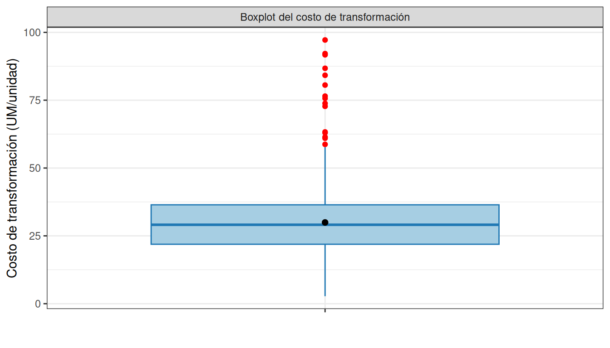
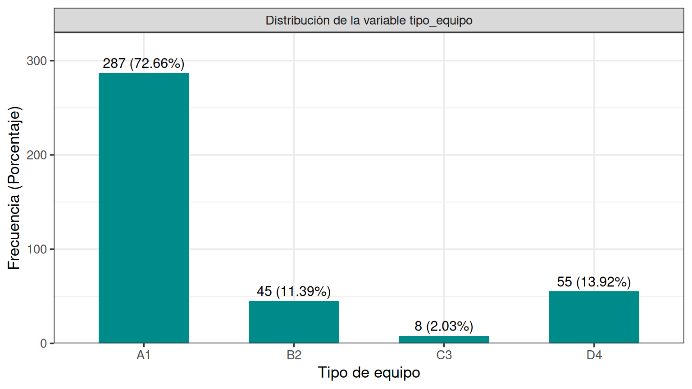
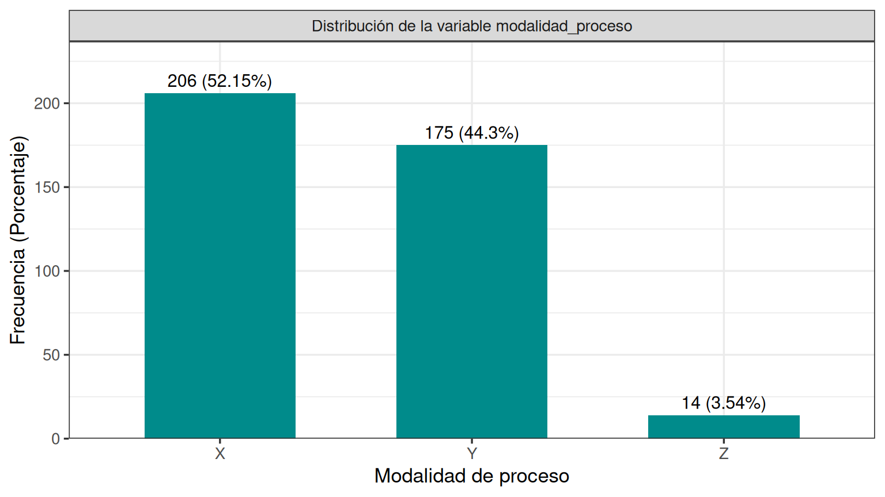

Capítulo 6 Análisis Exploratorio de Datos
El Análisis Exploratorio de Datos (EDA) tiene como propósito describir el comportamiento de las variables del estudio mediante resúmenes numéricos y representaciones gráficas, identificar patrones de variabilidad, detectar posibles valores atípicos y formular hipótesis que orienten el análisis inferencial posterior. En este capítulo se analizan las variables respuesta (costo_transformacion, costo_insumo y su agregado costo_unitario_total) y las variables predictoras del dataset depurado en el capítulo de metodología.
6.1 Carga del dataset analítico
Se carga el dataset depurado y con tipos ajustados. El archivo RDS preserva los factores, el factor ordenado num_insumos y la recodificación de insumo_2, de modo que este capítulo puede ejecutarse de forma autónoma.
library(tidyverse)
library(patchwork)
library(gridExtra)
library(knitr)
library(kableExtra)
datos <- readRDS("data/data_costos_limpio.rds")El dataset analítico contiene 395 órdenes de producción y 16 variables.
6.2 Análisis univariado de las variables respuesta
Las tres variables respuesta del estudio son costo_transformacion (costo de conversión por unidad producida), costo_insumo (costo de materias primas por unidad producida) y su agregado costo_unitario_total. Se analizan en paralelo porque responden a lógicas operativas distintas: el costo de transformación refleja eficiencia de máquina y proceso, mientras que el costo de insumo refleja decisiones de formulación y consumo de materias primas.
6.2.1 costo_transformacion
datos %>%
summarise(
n = length(costo_transformacion),
media = mean(costo_transformacion),
ds = sd(costo_transformacion),
`50%` = median(costo_transformacion),
minimo = min(costo_transformacion),
maximo = max(costo_transformacion),
Q1 = quantile(costo_transformacion, 0.25),
Q3 = quantile(costo_transformacion, 0.75),
IQR = IQR(costo_transformacion)
) -> resumen_ct
resumen_ct## # A tibble: 1 × 9
## n media ds `50%` minimo maximo Q1 Q3 IQR
## <int> <dbl> <dbl> <dbl> <dbl> <dbl> <dbl> <dbl> <dbl>
## 1 395 29.9 15.3 29.1 2.77 97.2 21.9 36.4 14.5La variable costo_transformacion se analizó a partir de 395 órdenes de producción. Se obtuvo un costo medio de conversión por unidad de 29.94 UM/unidad (DS = 15.26 UM/unidad), con un coeficiente de variación de 51%. El 50% de las órdenes presenta un costo de conversión por debajo de 29.09 UM/unidad. El mínimo registrado fue de 2.77 UM/unidad y el máximo alcanzó 97.18 UM/unidad, con un rango intercuartílico de 14.54 UM/unidad, lo que indica una dispersión considerable entre órdenes.
datos %>%
ggplot(aes(x = costo_transformacion)) +
geom_histogram(aes(y = after_stat(density)),
bins = 30,
fill = "#2c7fb8",
color = "white",
alpha = 0.6) +
geom_density(color = "darkblue", linewidth = 1.2) +
labs(x = "Costo de transformación (UM/unidad)",
y = "Densidad") +
theme_bw() +
facet_grid(. ~ "Distribución del costo de transformación")
datos %>%
ggplot(aes(x = "", y = costo_transformacion)) +
geom_boxplot(fill = "#a6cee3", color = "#1f78b4", outlier.color = "red") +
stat_summary(fun = mean, geom = "point", shape = 20, size = 3, color = "black") +
labs(x = "",
y = "Costo de transformación (UM/unidad)") +
theme_bw() +
facet_grid(. ~ "Boxplot del costo de transformación")
El histograma y el boxplot evidencian una distribución asimétrica hacia valores altos, con presencia de órdenes extremas que se destacan sobre el bigote superior. La distancia entre la media y el 50% sugiere que la media está influida por la cola derecha, por lo que los análisis inferenciales posteriores deben contemplar transformaciones o pruebas robustas.
6.2.2 costo_insumo
datos %>%
summarise(
n = length(costo_insumo),
media = mean(costo_insumo),
ds = sd(costo_insumo),
`50%` = median(costo_insumo),
minimo = min(costo_insumo),
maximo = max(costo_insumo),
Q1 = quantile(costo_insumo, 0.25),
Q3 = quantile(costo_insumo, 0.75),
IQR = IQR(costo_insumo)
) -> resumen_ci
resumen_ci## # A tibble: 1 × 9
## n media ds `50%` minimo maximo Q1 Q3 IQR
## <int> <dbl> <dbl> <dbl> <dbl> <dbl> <dbl> <dbl> <dbl>
## 1 395 5.05 4.42 4.18 0.0137 46.2 2.43 6.21 3.78El costo de insumo promedio es de 5.05 UM/unidad (DS = 4.42 UM/unidad), con un coeficiente de variación de 87.5%. El 50% de las órdenes tiene un costo de insumo por debajo de 4.18 UM/unidad, con un mínimo de 0.01 y un máximo de 46.22 UM/unidad. El rango intercuartílico es de 3.78 UM/unidad.
p_hist_ci <- datos %>%
ggplot(aes(x = costo_insumo)) +
geom_histogram(aes(y = after_stat(density)),
bins = 30,
fill = "#2ca02c",
color = "white",
alpha = 0.6) +
geom_density(color = "darkgreen", linewidth = 1.2) +
labs(x = "Costo de insumo (UM/unidad)", y = "Densidad") +
theme_bw() +
facet_grid(. ~ "Distribución del costo de insumo")
p_box_ci <- datos %>%
ggplot(aes(x = "", y = costo_insumo)) +
geom_boxplot(fill = "#b2df8a", color = "#33a02c", outlier.color = "red") +
stat_summary(fun = mean, geom = "point", shape = 20, size = 3, color = "black") +
labs(x = "", y = "Costo de insumo (UM/unidad)") +
theme_bw() +
facet_grid(. ~ "Boxplot del costo de insumo")
p_hist_ci + p_box_ci
6.2.3 costo_unitario_total
La variable costo_unitario_total se deriva como la suma de costo_transformacion y costo_insumo, y representa el costo total por unidad de producto conforme a la definición del ERP.
datos %>%
summarise(
n = length(costo_unitario_total),
media = mean(costo_unitario_total),
ds = sd(costo_unitario_total),
`50%` = median(costo_unitario_total),
minimo = min(costo_unitario_total),
maximo = max(costo_unitario_total),
Q1 = quantile(costo_unitario_total, 0.25),
Q3 = quantile(costo_unitario_total, 0.75),
IQR = IQR(costo_unitario_total)
) -> resumen_ctot
resumen_ctot## # A tibble: 1 × 9
## n media ds `50%` minimo maximo Q1 Q3 IQR
## <int> <dbl> <dbl> <dbl> <dbl> <dbl> <dbl> <dbl> <dbl>
## 1 395 35.0 17.3 33.6 4.30 112. 25.6 41.7 16.1El costo unitario total promedio es de 34.99 UM/unidad (DS = 17.29), con un coeficiente de variación de 49.4%. De este promedio, el 85.6% corresponde al costo de transformación y el 14.4% al costo de insumo. El 50% de las órdenes presenta un costo unitario total por debajo de 33.64 UM/unidad, con un rango entre 4.3 y 111.72.
p_hist_ct <- datos %>%
ggplot(aes(x = costo_unitario_total)) +
geom_histogram(aes(y = after_stat(density)),
bins = 30,
fill = "#8856a7",
color = "white",
alpha = 0.6) +
geom_density(color = "#4d004b", linewidth = 1.2) +
labs(x = "Costo unitario total (UM/unidad)", y = "Densidad") +
theme_bw() +
facet_grid(. ~ "Distribución del costo unitario total")
p_box_ct <- datos %>%
ggplot(aes(x = "", y = costo_unitario_total)) +
geom_boxplot(fill = "#bcbddc", color = "#756bb1", outlier.color = "red") +
stat_summary(fun = mean, geom = "point", shape = 20, size = 3, color = "black") +
labs(x = "", y = "Costo unitario total (UM/unidad)") +
theme_bw() +
facet_grid(. ~ "Boxplot del costo unitario total")
p_hist_ct + p_box_ct
El costo unitario total hereda la asimetría de sus dos componentes. La estructura de costos está dominada por el componente de transformación, que representa aproximadamente 85.6% del costo total promedio, frente al 14.4% del costo de insumo.
6.3 Análisis univariado de variables numéricas predictoras
Las variables numéricas predictoras son volumen_lote, duracion_proceso, cantidad_insumo_1 y cantidad_insumo_2. Para las cantidades de insumo, los estadísticos descriptivos se calculan condicionando sobre la presencia efectiva del insumo correspondiente, conforme a la advertencia estructural documentada en el capítulo de metodología.
datos %>%
summarise(
n = length(volumen_lote),
media = mean(volumen_lote),
ds = sd(volumen_lote),
`50%` = median(volumen_lote),
minimo = min(volumen_lote),
maximo = max(volumen_lote),
Q1 = quantile(volumen_lote, 0.25),
Q3 = quantile(volumen_lote, 0.75),
IQR = IQR(volumen_lote)
) %>%
mutate(variable = "volumen_lote") -> var_num_vol
datos %>%
summarise(
n = length(duracion_proceso),
media = mean(duracion_proceso),
ds = sd(duracion_proceso),
`50%` = median(duracion_proceso),
minimo = min(duracion_proceso),
maximo = max(duracion_proceso),
Q1 = quantile(duracion_proceso, 0.25),
Q3 = quantile(duracion_proceso, 0.75),
IQR = IQR(duracion_proceso)
) %>%
mutate(variable = "duracion_proceso") -> var_num_dur
datos %>%
filter(num_insumos >= 1) %>%
summarise(
n = length(cantidad_insumo_1),
media = mean(cantidad_insumo_1),
ds = sd(cantidad_insumo_1),
`50%` = median(cantidad_insumo_1),
minimo = min(cantidad_insumo_1),
maximo = max(cantidad_insumo_1),
Q1 = quantile(cantidad_insumo_1, 0.25),
Q3 = quantile(cantidad_insumo_1, 0.75),
IQR = IQR(cantidad_insumo_1)
) %>%
mutate(variable = "cantidad_insumo_1") -> var_num_ci1
datos %>%
filter(num_insumos == 2) %>%
summarise(
n = length(cantidad_insumo_2),
media = mean(cantidad_insumo_2),
ds = sd(cantidad_insumo_2),
`50%` = median(cantidad_insumo_2),
minimo = min(cantidad_insumo_2),
maximo = max(cantidad_insumo_2),
Q1 = quantile(cantidad_insumo_2, 0.25),
Q3 = quantile(cantidad_insumo_2, 0.75),
IQR = IQR(cantidad_insumo_2)
) %>%
mutate(variable = "cantidad_insumo_2") -> var_num_ci2
bind_rows(var_num_vol, var_num_dur, var_num_ci1, var_num_ci2) %>%
select(variable, everything())## # A tibble: 4 × 10
## variable n media ds `50%` minimo maximo Q1 Q3 IQR
## <chr> <int> <dbl> <dbl> <dbl> <dbl> <dbl> <dbl> <dbl> <dbl>
## 1 volumen_lote 395 2.74e3 2.35e3 1989 100 13300 1226 3289 2.06e3
## 2 duracion_proceso 395 1.16e2 8.26e1 100 3 482 60 150 9 e1
## 3 cantidad_insumo_1 395 2.29e0 1.90e0 2 0.05 14 1 3 2 e0
## 4 cantidad_insumo_2 124 1.43e0 1.08e0 1 0.05 7 0.75 2 1.25e0p_vol <- datos %>%
ggplot(aes(x = "", y = volumen_lote)) +
geom_boxplot(fill = "#1f77b4", alpha = 0.7) +
stat_summary(fun = mean, geom = "point", shape = 18, size = 4, color = "black") +
labs(title = "Distribución del volumen de lote", y = "Unidades", x = "") +
theme_bw()
p_dur <- datos %>%
ggplot(aes(x = "", y = duracion_proceso)) +
geom_boxplot(fill = "#2ca02c", alpha = 0.7) +
stat_summary(fun = mean, geom = "point", shape = 18, size = 4, color = "black") +
labs(title = "Distribución de la duración de proceso", y = "Horas", x = "") +
theme_bw()
p_ci1 <- datos %>%
filter(num_insumos >= 1) %>%
ggplot(aes(x = "", y = cantidad_insumo_1)) +
geom_boxplot(fill = "#ff7f0e", alpha = 0.7) +
stat_summary(fun = mean, geom = "point", shape = 18, size = 4, color = "black") +
labs(title = "Cantidad de insumo 1 (órdenes con insumo)",
y = "Litros equivalentes", x = "") +
theme_bw()
p_ci2 <- datos %>%
filter(num_insumos == 2) %>%
ggplot(aes(x = "", y = cantidad_insumo_2)) +
geom_boxplot(fill = "#9467bd", alpha = 0.7) +
stat_summary(fun = mean, geom = "point", shape = 18, size = 4, color = "black") +
labs(title = "Cantidad de insumo 2 (órdenes con segundo insumo)",
y = "Litros equivalentes", x = "") +
theme_bw()
(p_vol + p_dur) / (p_ci1 + p_ci2)
La interpretación detallada de cada distribución queda como ejercicio del lector. Los puntos clave a destacar son la amplitud de rango de volumen_lote, la presencia de colas en duracion_proceso, y la heterogeneidad de escala en las cantidades de insumo, consistente con la advertencia del capítulo de metodología sobre la posible diferencia de unidades entre tipos de insumo.
6.4 Análisis univariado de variables categóricas predictoras
vars_cat <- c("tipo_equipo", "equipo_id", "categoria_producto",
"modalidad_proceso", "num_insumos", "insumo_1", "insumo_2")
tabla_cat <- map_dfr(vars_cat, function(v) {
datos %>%
count(.data[[v]], name = "Frecuencia") %>%
mutate(
Porcentaje = round(Frecuencia / sum(Frecuencia) * 100, 2),
Variable = v,
Categoria = as.character(.data[[v]])
) %>%
select(Variable, Categoria, Frecuencia, Porcentaje)
})
tabla_cat## # A tibble: 41 × 4
## Variable Categoria Frecuencia Porcentaje
## <chr> <chr> <int> <dbl>
## 1 tipo_equipo A1 287 72.7
## 2 tipo_equipo B2 45 11.4
## 3 tipo_equipo C3 8 2.03
## 4 tipo_equipo D4 55 13.9
## 5 equipo_id M02 45 11.4
## 6 equipo_id M04 4 1.01
## 7 equipo_id M05 31 7.85
## 8 equipo_id M08 34 8.61
## 9 equipo_id M09 40 10.1
## 10 equipo_id M11 4 1.01
## # ℹ 31 more rowsEl tipo de equipo dominante es A1, que concentra el 72.66% de las órdenes. La variable equipo_id tiene 12 niveles distintos y categoria_producto tiene 7 niveles, lo cual exigirá tratamiento cuidadoso en los análisis inferenciales posteriores para evitar celdas con pocas observaciones.
tabla_te <- tabla_cat %>%
filter(Variable == "tipo_equipo") %>%
mutate(Etiqueta = paste0(Frecuencia, " (", Porcentaje, "%)"))
tabla_te %>%
ggplot(aes(x = Categoria, y = Frecuencia)) +
geom_col(fill = "#008B8B", width = 0.6) +
geom_text(aes(label = Etiqueta), vjust = -0.5, size = 4) +
scale_y_continuous(expand = expansion(mult = c(0, 0.15))) +
labs(x = "Tipo de equipo", y = "Frecuencia (Porcentaje)") +
theme_bw(base_size = 13) +
facet_wrap(~ "Distribución de la variable tipo_equipo")
tabla_mod <- tabla_cat %>%
filter(Variable == "modalidad_proceso") %>%
mutate(Etiqueta = paste0(Frecuencia, " (", Porcentaje, "%)"))
tabla_mod %>%
ggplot(aes(x = Categoria, y = Frecuencia)) +
geom_col(fill = "#008B8B", width = 0.6) +
geom_text(aes(label = Etiqueta), vjust = -0.5, size = 4) +
scale_y_continuous(expand = expansion(mult = c(0, 0.15))) +
labs(x = "Modalidad de proceso", y = "Frecuencia (Porcentaje)") +
theme_bw(base_size = 13) +
facet_wrap(~ "Distribución de la variable modalidad_proceso")
tabla_ni <- tabla_cat %>%
filter(Variable == "num_insumos") %>%
mutate(Etiqueta = paste0(Frecuencia, " (", Porcentaje, "%)"))
tabla_ni %>%
ggplot(aes(x = Categoria, y = Frecuencia)) +
geom_col(fill = "#008B8B", width = 0.6) +
geom_text(aes(label = Etiqueta), vjust = -0.5, size = 4) +
scale_y_continuous(expand = expansion(mult = c(0, 0.15))) +
labs(x = "Número de insumos", y = "Frecuencia (Porcentaje)") +
theme_bw(base_size = 13) +
facet_wrap(~ "Distribución de la variable num_insumos")
La construcción de los gráficos de barras para las variables categóricas restantes (equipo_id, categoria_producto, insumo_1, insumo_2) se deja como ejercicio, empleando el mismo patrón de geom_col con etiquetas.
6.5 Análisis bivariado: variables respuesta vs predictoras numéricas
6.5.1 Diagramas de dispersión
datos %>%
ggplot(aes(x = volumen_lote, y = costo_transformacion)) +
geom_point(alpha = 0.4, color = "#1E90FF") +
geom_smooth(method = "lm", formula = y ~ x, se = FALSE, color = "red") +
labs(x = "Volumen de lote (unidades)",
y = "Costo de transformación (UM/unidad)") +
theme_bw() +
facet_grid(. ~ "Dispersión entre volumen_lote y costo_transformacion")
datos %>%
ggplot(aes(x = duracion_proceso, y = costo_transformacion)) +
geom_point(alpha = 0.4, color = "#1E90FF") +
geom_smooth(method = "lm", formula = y ~ x, se = FALSE, color = "red") +
labs(x = "Duración del proceso (horas)",
y = "Costo de transformación (UM/unidad)") +
theme_bw() +
facet_grid(. ~ "Dispersión entre duracion_proceso y costo_transformacion")
6.5.2 Correlaciones
datos %>%
select(costo_transformacion, costo_insumo, costo_unitario_total,
volumen_lote, duracion_proceso,
cantidad_insumo_1, cantidad_insumo_2) %>%
cor(use = "pairwise.complete.obs", method = "pearson") %>%
round(3)## costo_transformacion costo_insumo costo_unitario_total
## costo_transformacion 1.000 0.344 0.971
## costo_insumo 0.344 1.000 0.560
## costo_unitario_total 0.971 0.560 1.000
## volumen_lote -0.350 -0.294 -0.384
## duracion_proceso 0.220 -0.087 0.172
## cantidad_insumo_1 -0.031 0.134 0.007
## cantidad_insumo_2 0.178 0.213 0.211
## volumen_lote duracion_proceso cantidad_insumo_1
## costo_transformacion -0.350 0.220 -0.031
## costo_insumo -0.294 -0.087 0.134
## costo_unitario_total -0.384 0.172 0.007
## volumen_lote 1.000 0.662 0.607
## duracion_proceso 0.662 1.000 0.670
## cantidad_insumo_1 0.607 0.670 1.000
## cantidad_insumo_2 0.093 0.339 0.367
## cantidad_insumo_2
## costo_transformacion 0.178
## costo_insumo 0.213
## costo_unitario_total 0.211
## volumen_lote 0.093
## duracion_proceso 0.339
## cantidad_insumo_1 0.367
## cantidad_insumo_2 1.000datos %>%
select(costo_transformacion, costo_insumo, costo_unitario_total,
volumen_lote, duracion_proceso,
cantidad_insumo_1, cantidad_insumo_2) %>%
cor(use = "pairwise.complete.obs", method = "spearman") %>%
round(3)## costo_transformacion costo_insumo costo_unitario_total
## costo_transformacion 1.000 0.361 0.961
## costo_insumo 0.361 1.000 0.547
## costo_unitario_total 0.961 0.547 1.000
## volumen_lote -0.269 -0.300 -0.318
## duracion_proceso 0.280 -0.031 0.222
## cantidad_insumo_1 0.019 0.290 0.069
## cantidad_insumo_2 0.264 0.248 0.288
## volumen_lote duracion_proceso cantidad_insumo_1
## costo_transformacion -0.269 0.280 0.019
## costo_insumo -0.300 -0.031 0.290
## costo_unitario_total -0.318 0.222 0.069
## volumen_lote 1.000 0.780 0.685
## duracion_proceso 0.780 1.000 0.696
## cantidad_insumo_1 0.685 0.696 1.000
## cantidad_insumo_2 0.153 0.304 0.287
## cantidad_insumo_2
## costo_transformacion 0.264
## costo_insumo 0.248
## costo_unitario_total 0.288
## volumen_lote 0.153
## duracion_proceso 0.304
## cantidad_insumo_1 0.287
## cantidad_insumo_2 1.000Las matrices de correlación se presentan en paralelo (Pearson y Spearman) siguiendo la recomendación metodológica de distinguir asociaciones lineales de asociaciones monótonas. Las correlaciones altas entre pares de predictoras deben considerarse en el capítulo de inferencia para evitar problemas de multicolinealidad.
Ejercicio. Construir los diagramas de dispersión para costo_insumo y costo_unitario_total frente a las cuatro predictoras numéricas, e interpretar las asociaciones observadas con apoyo en las matrices de correlación.
6.6 Análisis bivariado: variables respuesta vs predictoras categóricas
6.6.1 Tablas resumen por tipo de equipo
datos %>%
group_by(tipo_equipo) %>%
summarise(
n = length(costo_transformacion),
media = mean(costo_transformacion),
ds = sd(costo_transformacion),
`50%` = median(costo_transformacion),
minimo = min(costo_transformacion),
maximo = max(costo_transformacion),
Q1 = quantile(costo_transformacion, 0.25),
Q3 = quantile(costo_transformacion, 0.75),
IQR = IQR(costo_transformacion),
.groups = "drop"
)## # A tibble: 4 × 10
## tipo_equipo n media ds `50%` minimo maximo Q1 Q3 IQR
## <fct> <int> <dbl> <dbl> <dbl> <dbl> <dbl> <dbl> <dbl> <dbl>
## 1 A1 287 33.0 12.7 30.4 5.09 92.2 25.3 38.3 13.0
## 2 B2 45 29.9 11.2 28.9 12.0 75.7 22.3 33.1 10.9
## 3 C3 8 64.4 19.2 58.8 39.7 97.2 51.8 75.6 23.8
## 4 D4 55 8.82 3.54 8.46 2.77 22.0 6.03 10.9 4.83datos %>%
group_by(tipo_equipo) %>%
summarise(
n = length(costo_insumo),
media = mean(costo_insumo),
ds = sd(costo_insumo),
`50%` = median(costo_insumo),
minimo = min(costo_insumo),
maximo = max(costo_insumo),
Q1 = quantile(costo_insumo, 0.25),
Q3 = quantile(costo_insumo, 0.75),
IQR = IQR(costo_insumo),
.groups = "drop"
)## # A tibble: 4 × 10
## tipo_equipo n media ds `50%` minimo maximo Q1 Q3 IQR
## <fct> <int> <dbl> <dbl> <dbl> <dbl> <dbl> <dbl> <dbl> <dbl>
## 1 A1 287 5.17 3.90 4.30 0.105 36.7 2.77 6.41 3.64
## 2 B2 45 4.99 3.26 4.51 0.552 15.2 3.18 5.67 2.49
## 3 C3 8 11.3 6.10 11.4 2.40 18.2 7.31 16.4 9.05
## 4 D4 55 3.58 6.36 1.64 0.0137 46.2 1.13 4.23 3.106.6.2 Boxplots por tipo de equipo
datos %>%
ggplot(aes(x = tipo_equipo, y = costo_transformacion)) +
geom_boxplot(fill = "#87CEFA", outlier.colour = "red", outlier.shape = 16) +
stat_summary(fun = mean, geom = "point", shape = 18, size = 3, color = "darkblue") +
labs(x = "Tipo de equipo",
y = "Costo de transformación (UM/unidad)") +
theme_bw() +
facet_grid(. ~ "Costo de transformación por tipo de equipo")
datos %>%
ggplot(aes(x = tipo_equipo, y = costo_insumo)) +
geom_boxplot(fill = "#b2df8a", outlier.colour = "red", outlier.shape = 16) +
stat_summary(fun = mean, geom = "point", shape = 18, size = 3, color = "darkgreen") +
labs(x = "Tipo de equipo",
y = "Costo de insumo (UM/unidad)") +
theme_bw() +
facet_grid(. ~ "Costo de insumo por tipo de equipo")
datos %>%
ggplot(aes(x = modalidad_proceso, y = costo_unitario_total)) +
geom_boxplot(fill = "#bcbddc", outlier.colour = "red", outlier.shape = 16) +
stat_summary(fun = mean, geom = "point", shape = 18, size = 3, color = "#4d004b") +
labs(x = "Modalidad de proceso",
y = "Costo unitario total (UM/unidad)") +
theme_bw() +
facet_grid(. ~ "Costo unitario total por modalidad de proceso")
Ejercicio. Replicar el análisis bivariado anterior para las variables categóricas categoria_producto, num_insumos, insumo_1 e insumo_2, e interpretar los patrones observados con respecto a las tres variables respuesta.
6.7 Variables derivadas
Se construye la variable derivada velocidad_produccion como el cociente entre volumen_lote y duracion_proceso, expresada en unidades por hora. Esta métrica resume la productividad del proceso por orden y se incluye aquí porque su interpretación requiere haber analizado antes las dos variables que la componen.
datos %>%
summarise(
n = length(velocidad_produccion),
media = mean(velocidad_produccion),
ds = sd(velocidad_produccion),
`50%` = median(velocidad_produccion),
minimo = min(velocidad_produccion),
maximo = max(velocidad_produccion),
Q1 = quantile(velocidad_produccion, 0.25),
Q3 = quantile(velocidad_produccion, 0.75),
IQR = IQR(velocidad_produccion)
) -> resumen_vp
resumen_vp## # A tibble: 1 × 9
## n media ds `50%` minimo maximo Q1 Q3 IQR
## <int> <dbl> <dbl> <dbl> <dbl> <dbl> <dbl> <dbl> <dbl>
## 1 395 27.4 20.0 21.7 5.54 187. 16.6 27.1 10.5La velocidad de producción media es de 27.4 unidades/hora, con un valor 50% de 21.7 unidades/hora y un rango entre 5.5 y 186.9. Esta variable se utilizará en el capítulo de análisis inferencial para evaluar su asociación con el costo de transformación como proxy de eficiencia del proceso.
datos %>%
ggplot(aes(x = velocidad_produccion)) +
geom_histogram(aes(y = after_stat(density)),
bins = 30,
fill = "#ff7f0e",
color = "white",
alpha = 0.6) +
geom_density(color = "#d95f02", linewidth = 1.2) +
labs(x = "Velocidad de producción (unidades/hora)",
y = "Densidad") +
theme_bw() +
facet_grid(. ~ "Distribución de la velocidad de producción")